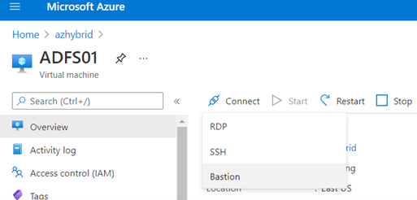

AAD Hybrid Identity: AD FS Environment
Contents
AAD Hybrid Identity: AD FS Environment¶
This environment was designed to replicate an on-prem Active Directory (AD) network synced with Azure AD to authenticate to the cloud with the same identity used on-prem. The authentication method used in this environment is federation with Active Directory Services (AD FS).
Network Design¶

Domain Users Information¶
You can change the default domain users through the domainUsers parameter in the main ARM template.
FirstName |
LastName |
SamAccountName |
Department |
JobTitle |
Password |
Identity |
UserContainer |
|---|---|---|---|---|---|---|---|
Norah |
Martha |
nmartha |
Human Resources |
HR Director |
S@l@m3!123 |
Users |
DomainUsers |
Pedro |
Gustavo |
pgustavo |
IT Support |
CIO |
W1n1!2019 |
Domain Admins |
DomainUsers |
Clem |
Jones |
cjones |
Research |
Lead |
Tr3@sur3Hunt! |
Domain Admins |
DomainUsers |
Lucho |
Rodriguez |
lrodriguez |
Accounting |
VP |
T0d@y!2019 |
Users |
DomainUsers |
Stevie |
Beavers |
sbeavers |
Sales |
Agent |
B1gM@c!2020 |
Users |
DomainUsers |
Sysmon |
MS |
sysmonsvc |
IT Support |
Service Account |
Buggy!1122 |
Users |
DomainUsers |
Nxlog |
Shipper |
nxlogsvc |
IT Support |
Service Account |
S3nData!1122 |
Users |
DomainUsers |
Domain Endpoints Information¶
Device Name |
Platform |
IP Address |
Description |
|---|---|---|---|
DC01 |
Windows Server 2019 |
192.168.2.4 |
Active Directory Domain Services (AD DS) server |
ADFS01 |
Windows Server 2019 |
192.168.2.5 |
Active Directory Federation Services (AD FS) server |
WORKSTATION6 |
Windows 10 |
192.168.2.6 |
Domain-joined workstation |
Prepare¶
Create Azure Storage private container.
Upload SSL certificate.
Upload MDE onboarding package.
Upload MDI onboarding package.
Deploy Lab Infrastructure¶
Once you finish all the steps from the Prepare section, you should be ready to deploy the lab infrastructure..
Elevate account access¶
The ARM template for this environment is of tenant scope. Therefore, you will need to elevate access to manage all Azure resources and assign “owner” or “contributor” roles to the account running the ARM template.
Browse to Azure portal.
Log in with a
Global Administratoraccount.Go to Azure Active Directory > Manage > Properties.
Under Access management for Azure resources, set the toggle to
Yes.

Save your setting.
This setting is not a global property and applies only to the currently signed in user. You can’t elevate access for all members of the Global Admin role.Locally on your computer, open PowerShell.
With Azure CLI installed, run the following command to log on as the
Global Administratoraccount you used in the previous steps and that you want to use to deploy the environment with.
az login
Assign
Owner RoleforRoot Scope ("/")to your own account.Log out and log back in after running the following command:
az role assignment create --scope '/' --role 'Owner' --assignee-object-id $(az ad signed-in-user show --query objectId) --assignee-principal-type User
Create Resource Group¶
You can use an existing Resource Group. However, I recommend creating a new one to avoid any issues with existing resources in the resource group.
az group create -n azhybrid -l eastus
Deploy ARM Template¶
Copy the multi-line command below to your favorite
text editorand update the default values (If you are not using PowerShell to run the commands below, make sure you update the format and thebackquote characterat the end of each line to whatever you use to run multi-line commands in your terminal).Make sure you run the updated commands in the same PowerShell session you used to elevate your account access.
az deployment tenant create `
--template-uri https://raw.githubusercontent.com/Azure/SimuLand/main/docs/environments/aadHybridIdentityADFS/azuredeploy.json `
--location YOURLOCATION `
--parameters `
resourceGroup='RESOURCE GROUP NAME' `
subscriptionId='SUBSCRIPTION ID' `
adminUsername='NEW LOCAL ADMIN' `
adminPassword='NEW LOCAL ADMIN PASSWORD' `
adfsUsername='NEW AD FS USER ACCOUNT' `
adfsPassword='NEW AD FS USER PASSWORD' `
domainFQDN='DOMAIN.COM' `
pfxCertName='CERT-NAME.pfx' `
pfxCertPassword='CERT-PASSWORD' `
_pfxCertBlobSasUrl='"https://STORAGE ACCOUNT.blob.core.windows.net/CONTAINER NAME/CERT.PFX?SAS-TOKEN"' `
_mdePackageBlobSasUrl='"https://STORAGE ACCOUNT.blob.core.windows.net/CONTAINER NAME/MDE-FILE.zip?SASTOKEN"' `
_mdiPackageBlobSasUrl='"https://STORAGE ACCOUNT.blob.core.windows.net/CONTAINER NAME/MDI-FILE.zip?SASTOKEN"' `
_mdiAccessKey='xxxxxx'
Parameter Definitions:
resourceGroup = Azure resource group to deploy resources to.
subscriptionId= Azure subscription ID to deploy resources to.
adminUsername = New local administrator account.
adminPassword = Password for new local administrator account.
adfsUsername = New AD FS service account.
adfsPassword = Password for new AD FS service account.
domainFQDN = The FQDN of the Active Directory domain to be created. Make sure it matches the verified domain you are using for the lab environment and SSL certificate.
pfxCertName = Name of the trusted CA signed SSL certificate hosted in the Azure storage account private container (Example:
ADFS.pfx). Check the getTrustedCASignedSSLCertificate docs for additional context.PfxCertPassword = Password used to export trusted CA signed SSl certificate.
_pfxCertBlobSasUrl = Blob SAS Url to access a trusted CA signed SSL certificate hosted in an Azure storage account private container.
_mdePackageBlobSasUrl = Blob SAS Url to access an Microsoft Defender for Endpoint (MDE) install package hosted in an Azure storage account private container. Keep the default name of the file
WindowsDefenderATPOnboardingPackage.zip._mdiPackageBlobSasUrl = Blob SAS Url to access an Microsoft Defender for Identity (MDI) install package hosted in an Azure account storage private container. Keep the default name of the file
Azure ATP Sensor Setup.zip._mdiAccessKey = Microsoft Defender for Identity (MDI) Access Key used to install an MDI sensor. This value is in your MDI portal under the sensors section.
You can track your deployment by going to resource groups > Resource Group NAME > Deployments.
After 30-35 mins, most of the on-prem infrastructure and Microsoft Sentinel would be deployed.
Additional Notes: While waiting for the installation of Microsoft Defender for Endpoint sensors, an endpoint extension might return an exception. However, if after checking the logs inside of the VM, and the error id is 35, it will continue checking for onboarding status and eventually finish the installation.
Validate Deployment¶
Once everything is deployed, I highly recommend you check the status of a few services and resources that were deployed by the ARM template provided with this setup.
“On-Prem” Virtual Network Deployed¶
Browse to Azure portal
Go to Resource Groups >
Resource Group Name.Select the
Virtual Networkresource > Monitoring > Diagram.

Validate AD FS Service is Running¶
Browse to Azure portal
Go to Resource Groups >
Resource Group NameSelect the ADFS01 virtual machine resource and click on
Connect> Bastion (More details).

Enter Administrator credentials
Open PowerShell as Administrator and run the following command to know if the AD FS service is running.
Get-Service ADFSSRV
Then, run the following command to get information about the AD FS server setup. You will need the value of HostName for the next section
step 5.
Get-AdfsProperties
Get-AdfsProperties | Select-Object HostName
Validate AD FS Service via the Intranet¶
Browse to Azure portal
Go to Resource Groups >
Resource Group NameSelect the WORKSTATION6 virtual machine and click on
Connect> Bastion (More details).
Enter domain user credentials
Browse to
https://<AD FS HostName>/adfs/ls/idpinitiatedsignon.aspx
The AD FS HostName is what we got previously on
step 6in the previous section.If you get a login page like the one below and you can authenticate with a domain user’s credentials, then the AD FS service is running properly via the Intranet.
You still need to link this service with Azure AD. More information about that is provided later in the
post-deployment taskssection.
Microsoft Sentinel Instance¶
Browse to Azure portal
Search for “Microsoft Sentinel”
Select Microsoft Sentinel instance created after running the ARM template.

Microsoft Sentinel Data Connectors¶
Microsoft Sentinel Instance > Data Connectors
Microsoft Sentinel Analytics – Active Scheduled Alerts¶
Microsoft Sentinel Instance > Analytics
Azure AD Active Directory - Diagnostic Settings¶
Browse to Azure portal
Search for
Azure Active DirectoryMonitoring > Diagnostic settings > AADConnector-
Name> Edit Setting.

Log Analytics Workspace – Windows Event Logs¶
Browse to Azure portal
Go to Resource Groups >
Resource Group Name.Select the
Log Analytics Workspaceresource.Go to Settings > Agents configuration > Windows event logs.

Microsoft Defender for Endpoint¶
Browse to Microsoft 365 Security portal
Click on “More Resources”
Click on “Open” under the Microsoft Defender Security Center
Device Inventory
Microsoft Defender for Identity¶
Browse to Microsoft 365 Security portal
Click on “More Resources”
Click on “Open” under Azure Advanced Threat Protection (Microsoft Defender for Identity)
Go to Configuration > Sensors. If you have a sensor that does not start properly or it is constantly stopping and restarting itself, check if the
Domain Controllersvalue is set. I have seen AD FS servers not picking up the domain controller name. Simply click on the sensor name and add the FQDN of the domain controller to theDomain Controllersproperty of the sensor.
Post-Deployment Tasks¶
Not everything can be automated yet. Therefore, there are a few additional tasks to complete:
Cleanup¶
If you want to remove some of the configurations, take a look at some of the documents below: